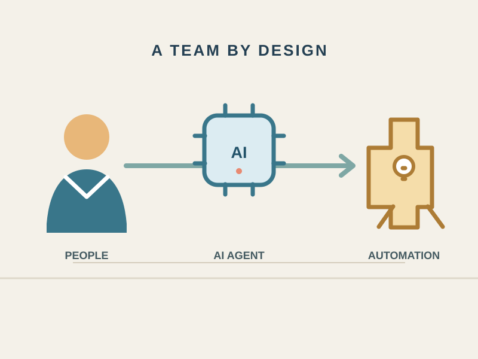
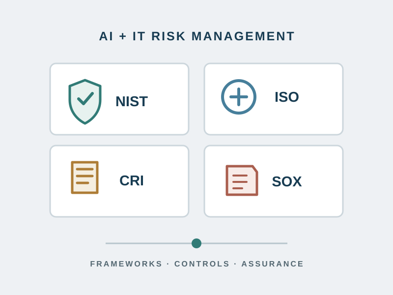

AI Governance: From Principles to Accountability
An AI policy is only the beginning. Put it to work with clear decision rights, safeguards matched to each use case, and oversight that continues after launch.
Fall 2026
Practical perspectives on AI governance, the human non-human workforce, and risk management—helping institutional leaders connect innovation with accountability, sound controls, and measurable outcomes.
An AI policy is only the beginning. Put it to work with clear decision rights, safeguards matched to each use case, and oversight that continues after launch.
Start with the workflow, not the tool. Define what AI may do, where people must intervene, and how to measure better work—not just faster output.

A framework matters when it changes a decision. Connect risk scenarios, testing, and controls to clear criteria for deployment, reassessment, and suspension—without mistaking adoption for proof of safety or compliance.
